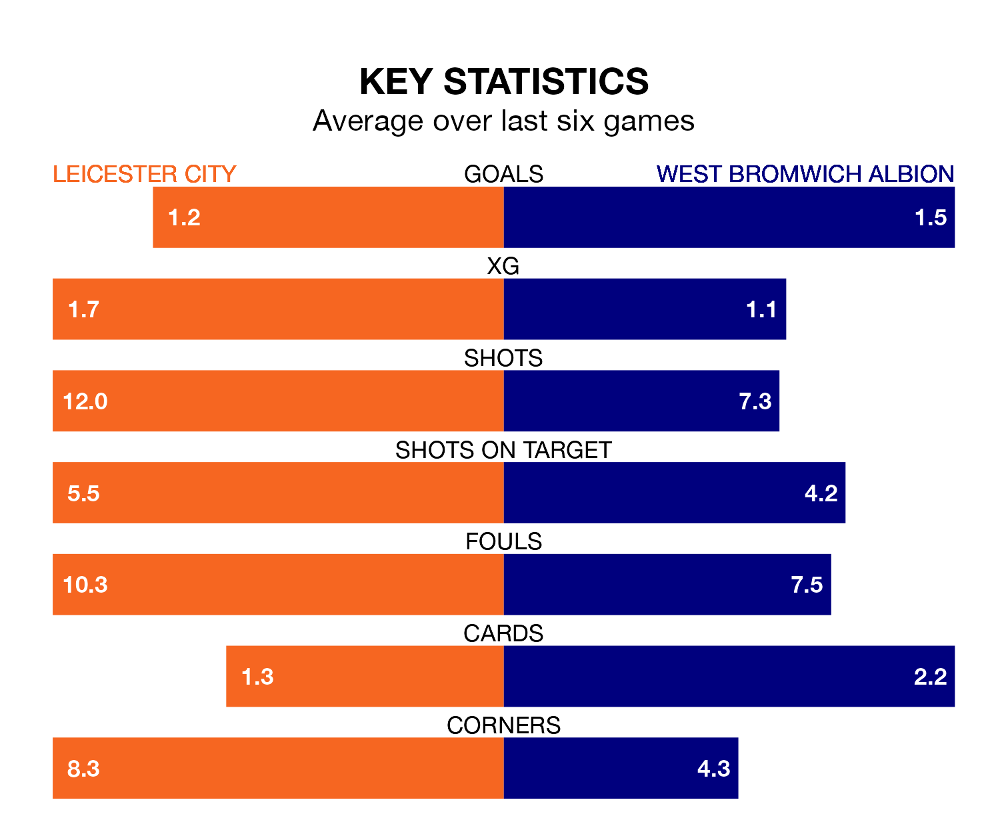

Leicester City host West Bromwich Albion in Saturday lunchtime's match at the King Power Stadium looking to bounce back from defeat last time out in EFL Championship.
The Foxes, who sit second in the league after 42 games, fell to a 1-0 away defeat to Plymouth Argyle on April 12.
They face a West Bromwich side who also lost their last match, a 1-0 defeat to Sunderland, and who sit fifth in the table.
With 79 goals in 42 games so far this season, Leicester are the league's third-highest scorers with 1.9 goals per game. And they are conceding fewer than average, letting in 38 goals at a rate of 0.9 per game.
West Bromwich are also above average scorers, with 1.5 goals per game, compared to a league average of 1.3. They have conceded 1.0 goal per game.
In Alex Palmer, Albion can rely on one of the league's safest pair of hands. He has kept 17 clean sheets in his 43 appearances this season, and only one other 'keeper – Leeds United's Illan Meslier – has been able to prevent the opposition scoring on more occasions in EFL Championship.
In City's net, Mads Hermansen has 12 clean sheets in 41 games.
In the last 10 years, Leicester and West Bromwich have played each other on 11 occasions. Leicester won seven of them, West Bromwich two, and they drew twice.
On average, the Foxes scored 2.1 goals and the Baggies 1.1 in those matches.
Their last meeting was on December 2, when Leicester won 2-1 away.
The Foxes are in mixed form in EFL Championship, with two wins and a draw from their last six games.
With two wins and three draws over that period, the Baggies' form is slightly better – they have taken nine points from 18, compared to the hosts' seven.
Saturday's match will be refereed by Thomas Bramall, who has taken charge of 10 EFL Championship games so far this season, issuing no red cards and booking 39 players. He has awarded one penalty.
The last Leicester game Bramall refereed was a 3-0 home win against Preston North End on October 4. He is yet to oversee a match featuring West Bromwich this season.
Updated: 15:40 (UTC), 18/04/24